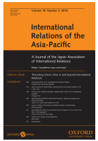

收录于合集

作品简介
【作者】 范·杰克逊（Van Jackson）, 惠灵顿维多利亚大学国际关系高级讲师、兼任美国乔治敦大学外交关系学院理事会高级研究员。
【编译】 曹鹏鹏
【校对】 ****金琳
【审核】 李源 ****
【排版】 杨洋
【来源】 International Relations of the Asia-Pacific Volume 14 (2014)
331–356.doi:10.1093/irap/lcu005 Advance Access published on 17 June 2014
期刊介绍

International Relations of Asia- Pacific，成立于2001年，由牛津大学出版社代表日本国际关系协会出版，每年1月、5月和9月出版共三次。该期刊主要关注亚太地区的国际政治动态，包括中国国内政治、美国在亚太地区的地位、地区治理、日本对外关系、亚洲与国际关系理论、中国的全球化道路以及中国的国家认同等。根据2018年Journal Citation Reports显示，其影响因子为1.233.
权力、信任与网络复杂性:亚洲安全对冲的三种逻辑
Power, trust, and network complexity: three logics of hedging in Asian security
内容提要
为什么对冲战略在亚洲如此普遍？本文认为对冲（而非制衡或追随）成为亚洲国际关系的主导趋势，并从权力转移理论、多极化下的不信任和网络复杂性三种视角解释了亚洲国家对冲的动机、对冲的指标、以及对冲可能会持续多久。权力转移理论认为，对冲是中美之间可能发生的权力转移的不确定性结果；多极化加剧了对它国意图的不确定性；网络复杂性解释了对冲是对亚洲复杂网络结构的一种反应，包括敏感性、流动性和异质性——这使得亚洲国家的政治精英难以评估当前承诺的未来后果。不确定性和复杂性成为当前亚洲安全环境的核心特征。而导致亚洲国家采取对冲战略的动机是什么？权力转移理论和多极不信任为对冲提供了主要解释。其次，建立在网络分析和复杂相互依赖基础上，论证该地区安全架构的流动性和复杂性，因为结盟的动机尚不明确，迫使国家进行对冲。作者认为在这三种不同因素的共同作用下促使亚洲国家选择对冲战略。
**
** 文章导读
一、 新时代的新趋势 ****
过去10年，对冲战略已成为亚太安全格局的主导趋势。对冲战略可以被理解为应对不确定性的一种方式。作为一种规避或减轻与某一行动相关风险的手段，对冲战略是一种追求对立或矛盾的行动的战略。除了像朝鲜和韩国这样的历史上长期敌对的国家，在亚太地区各国的制衡或者追随行为远不如对冲战略普遍。对冲战略的主要指标包括在无进攻意图下加强军事实力、参与双边和多变合作的意愿增强，减少制衡或追随，与地区的两个超级大国保持等距关系。 在东南亚，对冲至少有两种形式。首先是通过加强军事力量实现与其他国家的力量平衡对比，促进与东盟国家更深入的合作。其次是减少平衡或追随的行为，但追求两面下注。许多东盟成员国在寻求加强与美国军事合作的同时，也寻求中国在外交和经济方面的合作。有学者将东南亚这种“军事安全靠美国，经济发展靠中国”战略描述为“全面陷入（ omni-enmeshment ）”，即有意将中国和美国卷入相互依存的经济和外交关系网络，以期影响和阻止两大国的任何“侵略”意图。在东北亚，对冲的表现方式与东南亚大致相同：追求军事现代化；加强普遍、多边的安全合作；减少过度明显的制衡和追随；同时与中国和美国建立合作关系。除了这些可观察到的对冲指标外，作者还增加两个额外的指标：避免制度承诺和新联盟的产生。尽管冷战时期形成的美日、美韩同盟仍旧存在，但该地区目前仍未出现新的联盟，各国都试图避免出现相互制衡和追随的局面。其次，亚洲也没有制度承诺。基欧汉将制度定义为“持久的、相互联系的正式的和非正式的规则，这些规则规定行为角色、限定行动并塑造预期”。而亚洲的制度形式纯粹是共识性的，亚洲各国自由参与亚洲的制度形式，每个参与者对制度决定都有否决权，亚洲制度的决定不具有法律约束力，如果违反制度，也没有执行机构对其进行惩罚。
二、 对冲之谜 ****
为何亚洲国家普遍寻求对冲？两种结构性原因推动亚洲各国普遍采取对冲战略：一是中美权力转移的不确定性；二是基于向多极化趋势转变的普遍不信任。在亚洲，用来解释对冲战略的最流行的理论是权力转移理论。权力转移理论认为，崛起国与霸权国之间会发生权力冲突。这种思路隐含着这样一种假设，即只要中国崛起和美国保持实力具有可预见性，亚洲国家就会知道它们应该保持制衡还是追随。换句话说，由于领导力量及其意图的不确定性，亚洲各国无法采取制衡或追随战略。多极化视角的解释通常与现实主义本体论联系在一起，将物质权力作为系统结构的决定性要素。同理，实力的分配决定了国家必须做出一致的决定。但是，权力转移理论主要适用于霸权国和崛起国的国际环境中，而多极化是指由三个或三个以上大国的存在所定义的环境。在一个多极化的系统中，联盟是短暂的，因为联盟的形成和消失是很容易的，所以权力的平衡不断变化。而制度不会对战争发生的可能性产生有意义的影响。采取对冲战略具有合理性，因为国家永远不可能确定他人意图，不可能信任其他国家，因此难以与其他大国联盟。而为什么需要第三种理论对于对冲策略的解释？第一，权力转移理论和多极化理论无法解释对冲的所有指标。第二，国家政治的复杂性与权力的分散性变化成为推动各国决策转变的主要原因，国际政治的显著特征可能会以权力转移或多极现实主义（ multipolar realism ）无法预料的方式塑造和推动亚洲政治精英制定对外政策。
三、 对复杂网络结构的解释 ****
作者认为，除了权力转移理论和多极化理论的关于对冲战略的解释外，地区安全环境的复杂网络结构是推动对冲战略的根源。 1.什么是复杂网络?从根本上说，网络指的是行为体之间的联系。行为体间相互作用模式的密度和规律性是衡量网络强度的指标。网络是一种结构，为行为体做出决定提供环境；结构“形成和推动”行为体的政策方向，但并非起决定性作用。将复杂网络结构与传统的沃尔兹式结构区别开来的关键在于，复杂网络结构根据行为体之间的联系来定义结构，其本质来源于行为体之间存在流动的、多维的、有时是相互依存的关系。相反，沃尔兹式结构更多强调军事等物质性因素对行为体的影响。亚洲安全的复杂网络结构包含了行为体的多样性，这取决于网络结构的环境和基于行为体之间互动的非线性效应的预期。然而，行为体可能会寻求增加彼此敏感性的关系，同时在某种程度上通过对冲规避相互依赖。2.为什么复杂网络会产生对冲?该地区复杂的网络结构迫使亚洲国家采取对冲战略，特别是亚洲复杂网络的三个特征：第一是敏感性( sensitivity )；第二是流动性( fluidity )；第三是异质性( heterarchy )。这三种属性的存在，以及它们之间的相互作用，为复杂网络中的行为体采取对冲战略提供了强大的动力。敏感性是指一个国家受另一个国家的行为影响的程度，对他国行为的高度敏感性会鼓励采取对冲，以避免完全的相互依赖。简单地说，科学技术促进了行为体的联系，联系增加了相互敏感性，敏感性促使对冲作为一种减轻可能构成脆弱性相互依赖的手段。流动性与敏感性紧密交织在一起。由于结构不断变化，多极体系有时也被描述为流动体系。一般来说，决策者在流动结构中比在静态结构中更难以对其决策的动机和后果拥有充足信心。特别是今天，亚洲错综复杂的结构并没有为各国提供明确的激励机制，促使它们做出长期承诺，以制衡其他国家，或与其他国家一起追随大国。第三个属性是异质性。如果我们承认亚洲在安全关系、经济关系和文化关系方面存在多重层次，在网络空间等新领域更可能形成的技术领导或等级关系，那么作者认为，亚洲存在一种异质关系结构。这种异质关系的复杂性使国家很难长期决策，而是在制定战略决策时更倾向于对冲，以解决政策的离散状态。3.复杂网络中的对冲表1将基于权力转移不确定性和他国意图不确定性的对冲逻辑与基于复杂网络结构不确定性（即敏感性、流动性和异质性的相互作用）的对冲逻辑进行了比较。
作者对比上述影响因素发现，复杂网络中的对冲战略是解释亚洲国家出现的对冲的唯一逻辑。但其他两种因素也影响对冲的部分动机。
四、 影响 ****
基于上述讨论，决策者和学者需要考虑几个问题：对冲战略的趋势将持续多久？未来，国家是否会从对冲转向以规则为基础的制度或是新的联盟？
1.对冲能否持续?
基于权力转移不确定性的对冲战略强调，一旦亚洲国家确信中国将在可预见的未来成为地区霸主，他们就会停止采取对冲战略。采取对冲的动机消失，而追随已确定的地区霸主的动机就会增强。然而，从地区安全环境的复杂网络角度来看，对冲策略在未来一段时间内仍将存在。安全、经济和社会规范因素之间的相互依赖等问题的复杂性，与科技带来的前所未有的敏感性和关系模式的流动性相结合，使得在当今的安全环境中无论是选择制衡还是追随变得不切实际，这些都是亚洲的新常态。
2.亚洲网络结构的其他影响
在一个错综复杂、治理结构混乱的网络中，如果采取对冲战略的国家增加军费开支和实现现代化，非对冲国家进行对冲的结构性压力只会加大。因此，安全困境可能来自个别国家对单一国家的关切，但现在也可能来自个别国家需要跟上整个区域的军事化。在区域安全的制度安排或“安全架构”问题上，复杂的网络视角认为，亚洲“软”形式的制度主义是该地区的一个持久特征。这并不是说该地区注定要陷入原始的无政府状态。而是国家通过对冲避免对新盟友或地区安全机制的长期承诺，因为国家很难评估当前承诺的未来后果。
五、 结 论 ****
亚洲国家采取对冲战略的动机遵循不同的逻辑。在基本层面上，由于中美之间潜在权力转移的不确定性，各国无法明确其追随的对象，因而导致它们采取对冲战略。另一种观点认为，亚洲国家无法确定其他国家的意图，随着权力扩散，较小国家（以及非国家行为体）影响国际结果的能力正在增强。出于对行为体的不信任，各国只能通过两面下注来应对。在结构化的安全环境中，国家倾向于避免制衡和追随，同样也倾向于避免服从地区制度。网络结构视角认为，各国应该倾向于对冲，因为亚洲复杂网络的属性使得很难评估当前承诺的未来后果。作者认为，只有复杂网络视角强调，对冲的动机会随着时间的推移而持续。尽管这三种解释都能帮助我们理解对冲为何会发生，但说到底，网络的复杂性是一种结构性压力，它既不能决定个别的外交政策决定，也不能决定具体的结盟决定。战争仍可能爆发，制衡仍可能发生，单一霸权迟早会出现。亚洲的外交政策精英们将继续可以自由地做他们喜欢做的任何傻事，但结构性刺激将继续有利于保持一种对冲战略，即保留对盟友的现有承诺，但避免对其他国家或机制做出新的长期承诺。
_ ** _ ** _ ** _ 本文由国政学人独家编译推荐**__
扫下方二维码查看往期精彩
【新刊速递】第01期 | Review of International Studies Vol.45, No.4, 2019
【新刊速递】第02期 | International Relations Vol.33, No.3, 2019
【新刊速递】第03期 | International Organization Vol.73, No.3, 2019
【新刊速递】第04期 | World Politics, Vol.71, No.4, 2019
【新刊速递】第05期 | European Journal of International Relations
【新刊速递】第06期 | Security Studies, Vol.28, No.4, 2019
【新刊速递】第07期|International Secur.ity, Vol 44, No. 2, 2019
【新刊速递】第08期| Cambridge Review of International Affairs,Vol.32,No.4
【新刊速递】第09期| International Relations of Asia-Pacific Vol.19,No.3
分类导览 1
分类导览 2

点“在看”给我一朵小黄花